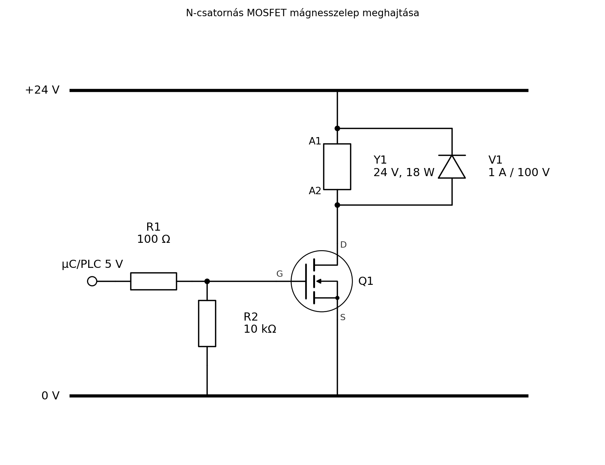
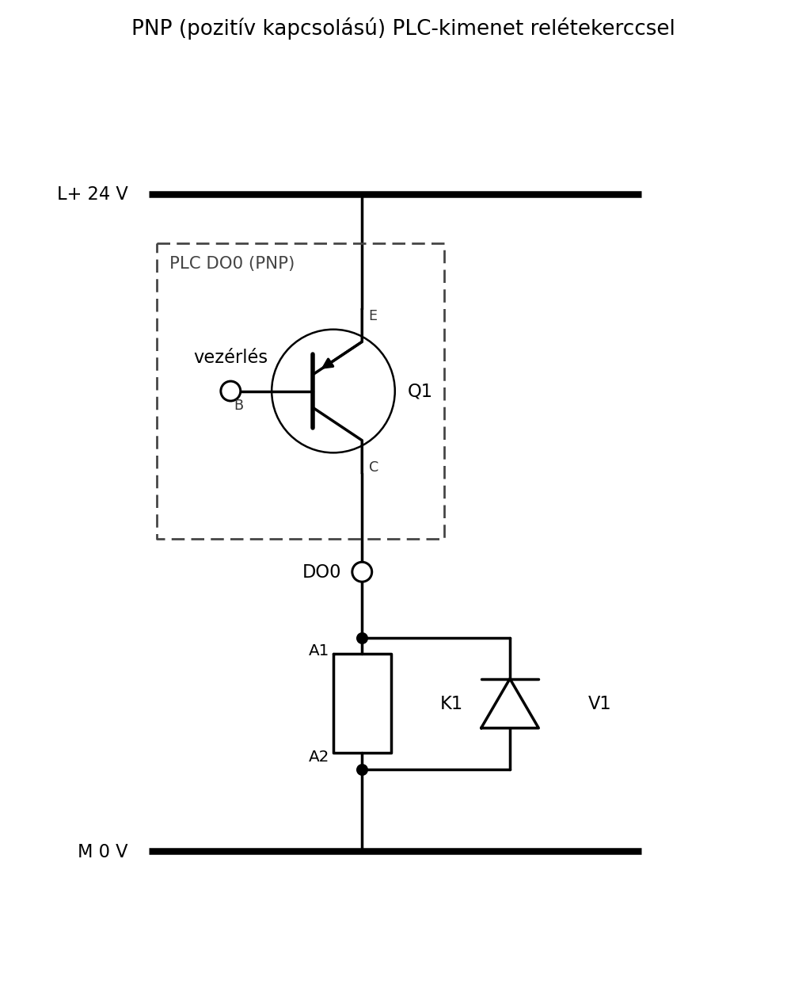
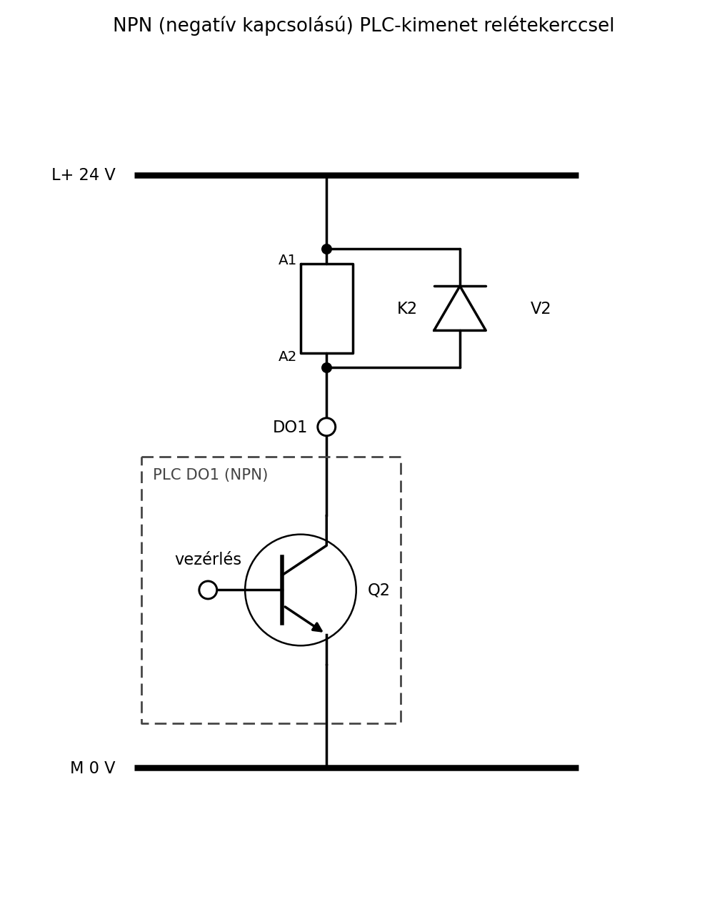
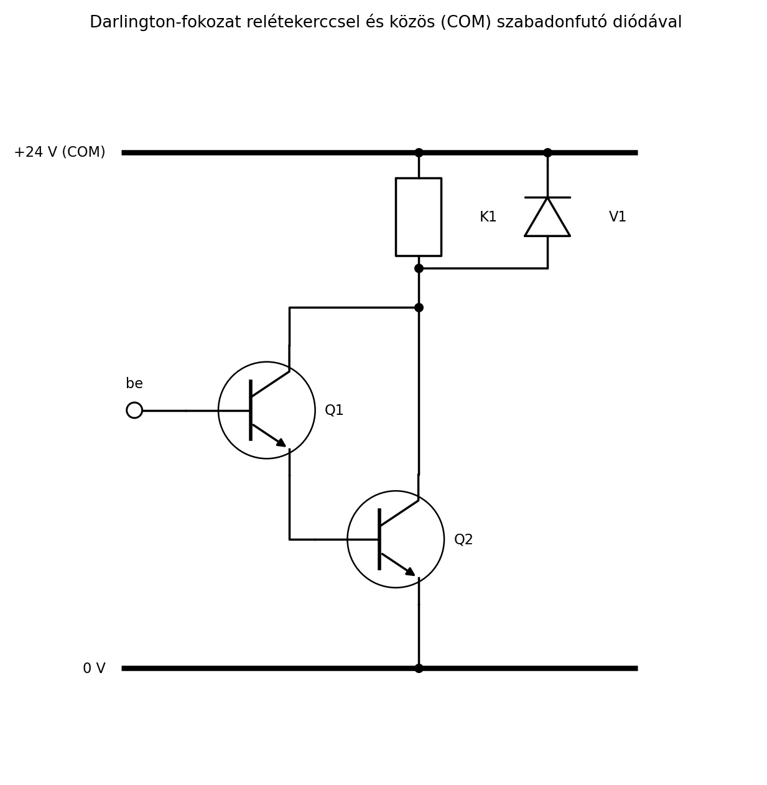

Egy PLC kimenete vagy egy mikrovezérlős vezérlőpanel általában néhány tíz milliampert tud kiadni, miközben a mágneskapcsoló, relé, izzó vagy szelep sokszor ennél lényegesen nagyobb áramot igényel. Ha a szerelő a PLC-kimenetet közvetlenül terheli, a kimenet meghibásodhat. A tranzisztor ezt a problémát úgy oldja meg, hogy kis vezérlőárammal vagy kis vezérlőfeszültséggel nagyobb terhelőáramot kapcsol. A villanyszerelői gyakorlatban tehát a tranzisztort legtöbbször kapcsolóként használjuk, nem hangerősítőként. Ugyanakkor a helyes kapcsolóüzemhez ismerni kell a tranzisztor erősítő jellegét, mert csak akkor tudjuk biztosan kinyitni vagy lezárni.
A legegyszerűbb hasonlat: a bipoláris tranzisztor egy olyan kapcsoló, amelyet bázisárammal vezérelnek, míg a MOSFET egy olyan kapcsoló, amelyet a kapura adott feszültség vezérel. A kapcsolóüzemű tranzisztor lényege, hogy vagy teljesen lezárt, vagy teljesen kinyitott állapotban van. A közbülső, részben vezető állapotban a tranzisztoron jelentős feszültség és áram egyszerre eshet, ami felesleges melegedést okoz.
A következő rajz egy NPN tranzisztorral meghajtott relét mutat. A Q1 tranzisztor szabványos rajzjellel szerepel, de kapcsolóüzemben vezérelt kapcsolóként működik: a teljes fizikai belső felépítésnél itt fontosabb a kapcsolási szerep. A K1 relétekerccsel párhuzamosan kötött V1 dióda a kikapcsoláskor fellépő induktív feszültséglöketet vezeti le.
A rajz működése: ha az S1 kapcsoló bezár, a bázisköri áram folyik Q1 bázis-emitter körén keresztül. Q1 ekkor kinyit (vezet), telítésbe kerül, a kollektor-emitter feszültsége kicsi lesz, és a K1 relétekerccsel soros kör zárul. A relé meghúz, a főáramköri érintkezői pedig kapcsolják a tényleges fogyasztót.
Definíció. A bipoláris tranzisztor (bipolar junction transistor, BJT) háromrétegű, két PN-átmenetet tartalmazó félvezető eszköz. NPN tranzisztor esetén két N-típusú réteg között egy vékony P-típusú bázisréteg van, PNP tranzisztornál a rétegsorrend fordított. A három kivezetés neve: kollektor (C), bázis (B) és emitter (E).
NPN tranzisztorban a kollektoráram a kollektorból az emitter felé folyik, a bázisáram a bázisból az emitter felé folyik. PNP tranzisztorban az áramirányok megfordulnak. A szerelői gyakorlatban a kapcsolások többsége NPN tranzisztort használ, mert azt a pozitív tápfeszültséghez képest a negatív ágban, azaz „lent” egyszerű bekapcsolni.
Összefüggés. A bipoláris tranzisztor nagyjelű, egyenáramú erősítési tényezője:
ahol a kollektoráram, pedig a bázisáram. Egy másik, ritkábban használt tényező:
A két tényező kapcsolata:
Az emitteráram a két áram összege:
Szilíciumtranzisztornál a nyitott bázis-emitter átmeneten közelítőleg:
Ez azért fontos a szerelőnek, mert a bázisköri ellenállás számításakor a vezérlőfeszültségből ezt le kell vonni.
A tranzisztor három kivezetéséből az egyik a bemeneti és kimeneti kör közös pontja. A gyakorlatban három alapkapcsolást különböztetünk meg:
A munkapont azt az egyenfeszültségű és egyenáramú állapotot jelenti, amely körül a tranzisztor egy erősítőben működik. A munkapontot a munkaponti kollektorárammal és a munkaponti kollektor-emitter feszültséggel adjuk meg. A kapcsolóüzemben viszont a tranzisztort nem ebben a közbülső tartományban akarjuk tartani, hanem csak a záró és a telítési állapot között mozgatjuk.
A kollektorköri ellenállással terhelt közös emitteres fokozat egyenáramú munkapontját a terhelő egyenes írja le. Ha a kollektorkor tápfeszültsége , a kollektor-ellenállás pedig , akkor:
Ebből a kollektoráram:
Ez az egyenlet a rajzon egy egyenest ad. A munkapont ezen az egyenesen helyezkedik el. Kapcsolóüzemben a Q1 lezárt állapotban az egyenes alsó végpontjában, telítésben az egyenes felső, bal oldali tartományában van.
A tranzisztoros relémeghajtásnál a kollektoráramot a terhelés határozza meg. Ha például a relé tekercse 24 V-on 60 mA-t vesz fel, akkor a tranzisztornak ezt a 60 mA-t kell kapcsolnia. Ahhoz, hogy a tranzisztor biztosan telítésbe kerüljön, a bázisáramnak legalább akkorának kell lennie, mint:
A gyakorlatban ennél nagyobb bázisáramot állítunk be, hogy a tranzisztor biztosan telítésbe kerüljön. A túlvezérlési tényezőt -val jelölve:
ahol tipikusan 2–5 közötti érték. A telítési állapotban a kollektor-emitter feszültség kicsi, szilícium-kisteljesítményű tranzisztoroknál jellemzően:
Ez az érték is típusfüggő, ezért a konkrét adatot a gyártói adatlapból kell venni (ellenőrizendő: gyártói adatlap).
Ha a tranzisztor jól telítésbe került, a rajta disszipált teljesítmény:
Ez általában kicsi. Ha viszont a bázisáram kevés, a tranzisztor a részben vezető, aktív tartományban marad, a kollektor-emitter feszültsége nagyobb lesz, és a teljesítményveszteség megnő. Például kollektoráramnál telítési feszültséggel a veszteség:
Ha viszont a tranzisztor aktív tartományban marad, és a kollektor-emitter feszültség lenne, akkor:
Ez egy kisteljesítményű tokozásnál már jelentős melegedést okozhat. Ezért a kapcsolóüzemben a cél a határozott lezárás és a határozott telítés.
Az NPN tranzisztor kimeneti jelleggörbéje a kollektoráramot mutatja a kollektor-emitter feszültség függvényében, különböző bázisáramok mellett. A görbék bal oldali, meredek szakasza a telítési tartomány, ahol a kollektoráram erősen függ a kollektor-emitter feszültségtől. A jobb oldali, közel vízszintes szakasz az aktív tartomány, ahol a kollektoráram elsősorban a bázisáramtól függ.
Az alábbi ábra egy szemléltető modellből számolt jelleggörbe-sereget mutat a fejezet relémeghajtásának áramléptékében, és ráteszi a 24 V-os, 400 Ω-os relétekercs munkaegyenesét: . A tranzisztor mindig a munkaegyenes és a bázisáramához tartozó görbe metszéspontjában, a munkapontban üzemel.
A modell (, szemléltető; a valódi görbét a gyártói adatlap adja). -nél a görbe a munkaegyenest a bal szélén, kb. 60 mA-nél és 0,2 V alatti -nél metszi: ez a telítés, a tranzisztor zárt kapcsolóként viselkedik (). -nél a metszéspont 40 mA-nél és 8 V-nál van: a tranzisztor aktív tartományban marad, – ez éppen a 6. (D) feladat hibás állapota. Bázisáram nélkül a tranzisztor lezár, . A HTML-kiadásban a bázisáram, a tekercsellenállás és a állítható, a lap kiírja a munkapontot és az állapotot. Ellenőrizd az ábrán: miért éppen a 0,6 mA-es görbe a határ (, a munkaegyenes bal vége), és miért adunk a méretezésnél ennél is többet (túlvezérlés, )?
Definíció. A MOSFET (metal-oxide-semiconductor field-effect transistor) unipoláris, feszültségvezérelt tranzisztor. Az N-csatornás MOSFET drain (D), gate (G) és source (S) kivezetéssel rendelkezik. A gate és a csatorna között szigetelő oxidréteg van, ezért a kapu egyenfeszültség hatására gyakorlatilag nem vesz fel folyamatos áramot.
N-csatornás MOSFET akkor kezd vezetni, ha a gate-source feszültség meghaladja a küszöbfeszültséget:
(Angol adatlapokon , néven szerepel.)
A küszöbfeszültség típustól függően néhány tized volttól több voltig terjedhet. A szerelői gyakorlatban ezért logikai szintű MOSFET-et kell választani, ha 3,3 V-os vagy 5 V-os mikrovezérlő közvetlenül hajtja. A pontos küszöbfeszültséget a gyártói adatlap tartalmazza (ellenőrizendő: gyártói adatlap).
A MOSFET bekapcsolt állapotában a drain-source ellenállás kicsi, jellemzően néhány tíz milliohm. A vezetési veszteség:
Egy relé vagy mágnesszelep meghajtásánál az N-csatornás MOSFET-et a terhelés alsó, negatív oldalába kötik, a source-ot a negatív tápfeszültségre, a drain-t a terhelés másik végére. A gate-en soros ellenállást és egy kapu-lezáró ellenállást szokás alkalmazni. A gate-soros ellenállás a nagy kapacitív töltőáramot és az esetleges nagyfrekvenciás berezgést csillapítja. A lezáró ellenállás pedig gondoskodik arról, hogy a vezérlőjel hiányában a gate ne lebegjen.
A MOSFET statikus vezérléséhez gyakorlatilag nincs szükség teljesítményt adó kapuáramra, csak a be- és kikapcsolás során kell feltölteni a gate-kapacitást. A szükséges átlagos kaputöltő áram nagyságrendileg:
ahol a gyártó által megadott összes kaputöltés, pedig a kívánt kapcsolási idő. A konkrét értékeket mindig a gyártói adatlap szerint kell ellenőrizni (ellenőrizendő: MOSFET adatlap).
Az alábbi rajz egy 24 V-os mágnesszelep N-csatornás MOSFET-es meghajtását mutatja: a Q1 a terhelés alsó ágában van (source a 0 V-on), a gate elé az R1 soros, a gate és a source közé az R2 lezáró ellenállás kerül.

Kövesd az áramutat: bekapcsolt vezérlésnél a +24 V → Y1 → Q1 (D → S) → 0 V úton folyik a 0,75 A; kikapcsoláskor a tekercs árama a V1-en át zárul. Mit kap a gate, ha a vezérlővezeték leszakad, és miért nem kapcsol be ekkor a szelep?
Harmadik számítás (C): MOSFET vagy bipoláris? Adott: 24 V DC mágnesszelep, 18 W; a vezérlés 5 V-os logikai kimenet, legfeljebb 20 mA.
Terhelőáram: .
Bipoláris tranzisztorral: (közepes teljesítményű tranzisztor, szemléltető), → : a logikai kimenet közvetlenül nem hajtja meg (Darlington vagy kétfokozatú meghajtás kellene).
Logikai szintű MOSFET-tel: -nál (szemléltető, ellenőrizendő: adatlap) → , hűtőborda nem kell. A statikus kapuáram csak az R2-n folyik: ; bekapcsoláskor a gate-kapacitás töltőárama rövid ideig legfeljebb , de csak néhány száz ns-ig.
A szabadonfutó dióda: , → 1 A / legalább 100 V (1N4004-jellegű).
Ellenőrzés: bekapcsolva – a szelepre gyakorlatilag a teljes 24 V jut.
230 V-os váltakozó áramú terhelést se MOSFET-tel, se bipoláris tranzisztorral nem kapcsolunk így – arra relé vagy félvezetős relé (SSR) való, lásd Erősáramú félvezetők: tirisztor, triac, IGBT, MOSFET.
A rajzokon a bipoláris tranzisztort a bázisra merőleges vastag vonallal és a kollektor–emitter közötti vezetési vonallal jelölik, az emitternél nyíl mutatja az áramirányt. A MOSFET jele a gate szigetelését külön jelölt negyedik réteggel mutatja. A bekötésnél a jelképekből viszont nem a tok lábkiosztása derül ki, ezért a tényleges kivezetéseket mindig a tok adatlapjáról kell leolvasni.
Az alábbi ábra a leggyakoribb tranzisztortokokat mutatja. A TO-92 a kisjelű tranzisztorok (pl. relémeghajtás) tokja; a lábakat a lapos oldal felől nézve számozzuk. A SOT-23 felületszerelt tok, nyáklapra forrasztva. A TO-220 közepes teljesítményű tok fém hűtőfüllel és furattal, a TO-247 a nagy teljesítményű MOSFET-ek és IGBT-k tokja. A lábak a rajzon szándékosan csak sorszámot kapnak: ugyanabban a tokban többféle sorrend (B–C–E, E–B–C, G–D–S …) létezik.
Különösen figyelj arra, hogy a TO-220 és a TO-247 fém füle gyakran a középső lábbal (kollektor vagy drain) azonos potenciálon van: ha a hűtőborda más potenciálon van, a tokot szigetelten kell rögzíteni (lásd az Erősáramú félvezetők: tirisztor, triac, IGBT, MOSFET alfejezet hűtőborda-szerelési ábráját). A HTML-kiadásban egy tokra mutatva megjelenik a felhasználási területe.
A relémeghajtó kapcsoláson a tranzisztor kollektora vagy drainje a terhelés alsó ágába kerül, a terhelés másik vége a pozitív tápfeszültségre csatlakozik. A bázisköri ellenállás a vezérlőfeszültség és a tranzisztor közé kerül. A soros vezérlőkapcsoló, nyomógomb vagy PLC-kimenet ezt a bázisköri áramkört kapcsolja.
A villanyszerelő a tranzisztort a legtöbbször nem önálló alkatrészként, hanem egy PLC tranzisztoros kimenetében vagy egy háromvezetékes érzékelőben „látja”. Ezek bekötéséhez azt kell tudni, a terhelés melyik oldalán van a kapcsoló.
Definíció. Pozitív kapcsolás (high-side, „source”, PNP vagy P-csatornás FET): az elektronikus kapcsoló a + sín (L+) és a terhelés között van, a terhelés másik vége a 0 V-on (M). Negatív kapcsolás (low-side, „sink”, NPN vagy N-csatornás FET): a terhelés egyik vége a +24 V-on van, a kapcsoló a terhelés és a 0 V között.
Az alábbi két rajz ugyanazt a 24 V DC relétekercset mutatja PNP, illetve NPN kimenetre kötve, alapállapotban (a kimenetek kikapcsolva). Mindkettőn ott a szabadonfutó dióda, katódjával az A1-en.


Vesd össze a két rajzot: PNP kimenetnél a DO0 kapocs és a tekercs A1-e között „+24 V vagy semmi”, NPN-nél a DO1 és az A2 között „0 V vagy semmi” van. Ezért a PNP kimenet terhelésének másik vége az M-re, az NPN-é az L+-ra kerül.
Miért pozitív kapcsolás? Ha a vezérlőkör 0 V-ja (M) a PE-re van kötve (PELV-tápegység, lásd Egyenirányítók, szűrők, stabilizátorok, kapcsolóüzemű táp és PFC), vizsgáljuk meg, mi történik, ha a kimenet és a tekercs közötti vezeték földzárlatos lesz (a szigetelés a szekrény testéhez dörzsölődik):
A gépek villamos berendezésére vonatkozó követelmény, hogy a vezérlőkör földzárlata ne okozzon nem szándékolt indítást (ellenőrizendő: MSZ EN 60204-1, vezérlőkörök földzárlati védelme). Ezért terjedt el Európában a pozitív kapcsolású (PNP) kimenet és érzékelő.
| Kimenettípus | A terhelés másik vége | Közös kapocs a kimenetkártyán | Tipikus előfordulás |
|---|---|---|---|
| PNP, pozitív kapcsolás („source”) | M (0 V) | 1L+ (a kimenetek tápja) | az EU-ban szinte kizárólag ez |
| NPN, negatív kapcsolás („sink”) | L+ (+24 V) | 1M (közös 0 V) | egyes távol-keleti PLC-k és érzékelők – figyelj rá cserénél |
A háromvezetékes érzékelők kimenete ugyanígy PNP vagy NPN lehet (lásd Hő-, fény- és feszültségfüggő elemek és érzékelők); a PLC be- és kimeneteinek bekötése a PLC-alapok és ipari vezérlés alfejezetben szerepel.
A szekrényben ritkán építünk diszkrét meghajtót; kész egységek adatlapját kell értelmezni. A Darlington-kapcsolásban két tranzisztor úgy kapcsolódik, hogy az első emitterárama a második bázisárama: az eredő erősítés , de a telítési nagyobb, jellemzően kb. 1 V (ellenőrizendő: adatlap). A 7–8 csatornás Darlington-tömbök (ULN-típusú IC-k) csatornánként tartalmaznak ilyen fokozatot és szabadonfutó diódát; a diódák katódjai közös COM kapocsra mennek, amelyet a terhelés pozitív tápjára kell kötni. Ha ez elmarad, a tekercsek nincsenek védve. A PLC tranzisztoros kimeneti modul csatornánként áramkorlátos, zárlatvédett félvezető kapcsoló, és a csoportoknak összesített áramkorlátja is van (pl. 0,5 A/csatorna, 4 A/csoport; szemléltető, ellenőrizendő: modul adatlap). A csatolórelé-modul foglalatában a dióda és a jelző LED gyakran már benne van, ezért a tekercs polaritásfüggő (A1+, A2−; ellenőrizendő: gyártói jelölés).

Továbbvitt eredmény. A tranzisztoros meghajtás, a bázisellenállás méretezése és a telítéses kapcsolóüzem itt bemutatott módszere kell a Hő-, fény- és feszültségfüggő elemek és érzékelők alfejezethez, ahol a hőmérséklet-, fény- vagy feszültségfüggő elemek jelét tranzisztoros fokozattal alakítjuk át relé vagy jelzőlámpa működtetésére.
Egy vezérlőszekrényben a PLC 24 V-os kimenete egy mágneskapcsoló tekercsét akarta vezérelni. A tekercs árama volt, a PLC-kimenet viszont csak -t tudott volna szolgáltatni. A szerelő először egy kis NPN tranzisztoros meghajtópanelt épített be, de a bázisellenállást elhagyta. A PLC-kimenet a bázis-emitter diódán keresztül gyakorlatilag rövidre záródott a 0 V-os (negatív) sínre: a kimenet feszültsége kb. 0,7 V-ra esett, az áramot csak a kimenet belső korlátozása szabta meg, a kimenet túlterhelődött, a tranzisztor is melegedett, és a meghajtás néhány kapcsolás után bizonytalanul működött.
A javítás során a szerelő az adott tranzisztor adatlapjából kikeresett értéket, a tekercsáramból meghatározta a szükséges bázisáramot, és megfelelő bázisellenállást épített be ( és mellett , , a kerekített szabványos érték ; szemléltető (ellenőrizendő: a tranzisztor adatlapja)). A kollektoráramot a mágneskapcsoló tekercsével sorba kötötte, a védődiódát pedig a tekercscsel párhuzamosan úgy, hogy a katód a pozitív tápfeszültség felé essen. A próba után a tranzisztor hideg maradt, a PLC-kimenet terhelése pedig kb. – volt, jóval a -es határ alatt.
Biztonsági korlát. Ipari vezérlőszekrényben a 24 V-os elektronika mellett gyakran 230/400 V-os hálózati feszültségű részek is vannak. Az ilyen munkát csak jogosult személy végezheti, feszültségmentesítés és a munkavégzési szabályok betartása mellett. A tanuló 230/400 V-os hálózaton önállóan ne gyakoroljon.
1. hiba: a bázisellenállás elhagyása.
A PLC vagy mikrovezérlő kimenete 24 V vagy 5 V feszültségű, a nyitott
bázis-emitter átmenet viszont csak kb. 0,7 V-ot enged. Elmaradó
ellenállásnál a vezérlőáramot csak a kimenet belső ellenállása
korlátozza, ami túlterhelést és tönkremenetelt okoz.
2. hiba: a védődióda elhagyása.
A relétekercs induktivitás. Amikor a tranzisztor lezár, a tekercs árama
hirtelen meg akar szűnni, és a tekercsen a tápfeszültségnél jóval
nagyobb feszültség indukálódik. Ez a tranzisztort átütheti. A tekercscel
ellentétes irányú, párhuzamos dióda ezt a feszültséget levezeti.
3. hiba: a tranzisztort a részben vezető tartományban
használják.
Ha a bázisáram túl kicsi, a tranzisztor nem telít, a kollektor-emitter
feszültség nagy marad, és a tranzisztor melegszik. Ilyenkor a
bázisellenállást kisebbre kell választani, vagy a bázisáramot más módon
növelni.
4. hiba: MOSFET-nél a lebegő gate.
Ha a gate nem kap határozott lezáró feszültséget, a szigetelt kapu
feszültsége zajtól, statikus feltöltődéstől változhat, és a MOSFET
véletlenszerűen bekapcsolhat. A gate-re nagy ellenállású, néhány tíz
kilohmos lezáró ellenállást kell tenni a source felé.
Alkatrész bemérése. Előbb az öt biztonsági szabály, a kondenzátorok kisütése; a tranzisztort forraszd ki vagy emeld ki a foglalatból. MOSFET-nél tartsd be az ESD-védelmet (földelt csuklópánt, vezető csomagolás). Diódaállás:
| Alkatrész | Mérés | Jó érték | Hibás |
|---|---|---|---|
| NPN | piros a B-n, fekete E-n, majd C-n; fordítva | 0,6–0,7 V; fordítva OL | átmenet mindkét irányban kb. 0 V: átütött; mindkét irányban OL: szakadt |
| PNP | fekete a B-n, piros E-n, majd C-n; fordítva | 0,6–0,7 V; fordítva OL | mint az NPN-nél |
| BJT C–E | mindkét irányban | OL | kb. 0 V: átütött |
| N-MOSFET testdióda | piros S, fekete D; fordítva | 0,4–0,7 V; fordítva OL (kisütött kapuval) | D–S mindkét irányban kb. 0 V: átütött |
| N-MOSFET „kapupróba” | piros G, fekete S, utána D–S; majd G–S rövidre | feltöltött kapuval D–S vezet; G–S rövidre után újra OL | nem változik: hibás, vagy a műszer feszültsége kevés a küszöbhöz (ellenőrizendő: adatlap) |
A MOSFET jellemzően zárlatosan hibásodik meg: a terhelés ilyenkor folyamatosan be van kapcsolva.
Beépített fokozat (24 V-os relémeghajtó, mérés feszültség alatt, törpefeszültségen, a 0 V-hoz képest):
| Tünet | Mérés | Valószínű ok |
|---|---|---|
| a relé soha nem húz | V | nincs vezérlőjel vagy szakadt |
| a relé soha nem húz | V, V | szakadt tranzisztor (a tekercs ép, ezen át áll a kollektoron a 24 V) |
| a relé soha nem húz | V, V, az A1-en +24 V hiányzik vagy a tekercs szakadt | táp- vagy tekercshiba: A1 mérése, tekercsellenállás feszültségmentesen |
| a relé mindig meghúzva | V, V | C–E átütött (gyakran hiányzó vagy szakadt szabadonfutó dióda után) |
| a relé mindig meghúzva | V vezérlés nélkül | „ragadó” kimenet vagy lebegő bázis, gate |
| forró tranzisztor, bizonytalan relé | több volt | kevés bázisáram (lásd 6. feladat) |
| a táp bekapcsoláskor túláramra kapcsol | dióda vizsgálata feszültségmentesen | fordítva bekötött vagy átütött szabadonfutó dióda |
Kidolgozott hibakeresési eset.
Gyakorlás: ennek az alfejezetnek a kidolgozott példái, gyakorlatai és megoldással ellátott feladatai az Összefoglaló feladatgyűjtemény villanyszerelő tanulóknak című kötet 37.2 szakaszában találhatók.
A bipoláris tranzisztor áramvezérelt félvezető eszköz: a bázisáram szabályozza a kollektoráramot. A nagyjelű erősítési tényező , az emitteráram pedig . Kapcsolóüzemben a tranzisztort lezárt és telített állapot között működtetjük. Telítéshez a bázisáramnak nagyobbnak kell lennie, mint , ezért túlvezérlést alkalmazunk. A bázisellenállást a vezérlőfeszültség és a nyitott tranzisztor feszültsége közötti különbségből számítjuk úgy, hogy a kívánt bázisáramot megkapjuk.
A MOSFET feszültségvezérelt tranzisztor: a gate-source feszültség haladja meg a küszöbfeszültséget, a statikus kapuáram gyakorlatilag nulla, bekapcsolt állapotban a veszteséget határozza meg. Relémeghajtásnál a terhelést a tranzisztor alsó ágába kötik, és a tekercscel párhuzamos védődiódát kell alkalmazni az induktív feszültséglöket ellen. A tranzisztoros meghajtás alapjait a későbbi érzékelős kapcsolások is használják.